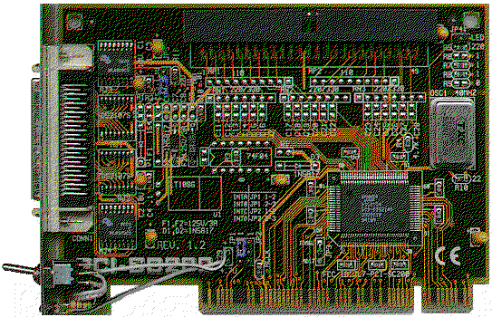
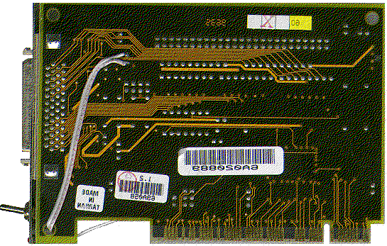

Previous
Next
TOC
Der Asus SC200 SCSI Hostadapter
Die nachrüstung des NVRAM ICs beim Asus SC200
Dem SCSI Hostadapter mit dem 53C810(A) Chip von Symbios Logic fehlt
in vielen Fällen das Bioseprom sowie das Setup-EEPROM. Das Bioseprom
kann man entweder in das Mainboardbios reinpatchen (jenachdem wieviel
Platz noch frei ist, z.b. mittels CBROM.EXE) oder man steckt das
Eprom (16KByte Eprom für das SDMS-Bios Version 3.xx oder 32KByte
Eprom für das SDMS-Bios Version 4.xx) in den freien Sockel für das
Booteprom auf der (eventuell) vorhandenen Netzwerkkarte. Das EEPROM
muß allerdings an den 53C810(A) Chip direkt angeschlossen werden und
dies wird hier am Asus SC200 Hostadapter besprochen.
Die beiden Platinenseiten des SC200 Hostadapters:


weiterblättern
Kapitel Der Asus SC200 SCSI Hostadapter, Seite 1